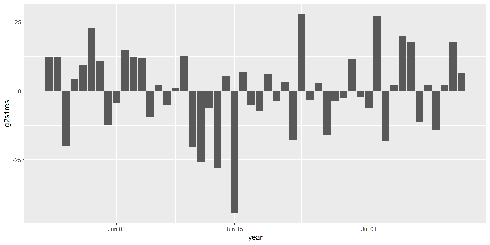

Model Selection, Multicollinearity, G2S
Course: Economic Forecasting and Modeling
12/18/22
The causal hypothesis is GDP \(\Rightarrow\) Con. \(C = \alpha + \beta Y+\epsilon\). Running this regression on the data leads to the following results:
| ID | C | Y | C_hat | residual |
|---|---|---|---|---|
| 1 | 327 | 404 | 313 | 14.702 |
| 2 | 326 | 422 | 327 | -0.527 |
| 3 | 348 | 433 | 336 | 12.764 |
| 4 | 380 | 469 | 364 | 15.765 |
| 5 | 365 | 459 | 356 | 9.179 |
| 6 | 356 | 450 | 349 | 6.702 |
| 7 | 367 | 469 | 364 | 3.279 |
| 8 | 396 | 472 | 366 | 29.665 |
| 9 | 405 | 478 | 371 | 33.703 |
| 10 | 393 | 488 | 379 | 14.210 |
| 11 | 390 | 492 | 382 | 8.192 |
| 12 | 415 | 515 | 400 | 14.709 |
| 13 | 434 | 518 | 402 | 31.750 |
| 14 | 459 | 553 | 430 | 29.601 |
| 15 | 472 | 577 | 449 | 22.980 |
| 16 | 489 | 594 | 462 | 26.276 |
| 17 | 496 | 614 | 478 | 18.516 |
| 18 | 506 | 624 | 485 | 20.989 |
| 19 | 532 | 649 | 506 | 26.671 |
| 20 | 526 | 663 | 517 | 8.975 |
| 21 | 514 | 684 | 533 | -19.132 |
| 22 | 532 | 714 | 556 | -24.006 |
| 23 | 524 | 727 | 566 | -41.891 |
| 24 | 544 | 737 | 574 | -30.830 |
| 25 | 513 | 752 | 587 | -73.249 |
| 26 | 552 | 788 | 615 | -62.748 |
| 27 | 563 | 780 | 608 | -44.989 |
| 28 | 560 | 787 | 614 | -54.180 |
| 29 | 582 | 804 | 627 | -44.784 |
| 30 | 597 | 819 | 639 | -41.955 |
| 31 | 602 | 804 | 627 | -25.024 |
| 32 | 577 | 801 | 625 | -47.439 |
| 33 | 611 | 808 | 630 | -18.628 |
| 34 | 618 | 820 | 640 | -21.525 |
| 35 | 632 | 828 | 646 | -14.324 |
| 36 | 620 | 829 | 646 | -26.766 |
| 37 | 632 | 856 | 668 | -35.682 |
| 38 | 668 | 900 | 702 | -34.756 |
| 39 | 721 | 937 | 731 | -10.505 |
| 40 | 753 | 970 | 757 | -4.240 |
| 41 | 774 | 994 | 776 | -1.969 |
| 42 | 809 | 988 | 771 | 37.285 |
| 43 | 787 | 993 | 776 | 11.045 |
| 44 | 787 | 987 | 771 | 16.041 |
| 45 | 806 | 993 | 775 | 30.304 |
| 46 | 830 | 1006 | 786 | 43.726 |
| 47 | 831 | 1028 | 803 | 27.837 |
| 48 | 854 | 1054 | 824 | 30.532 |
| 49 | 863 | 1081 | 845 | 17.687 |
| 50 | 894 | 1118 | 873 | 20.925 |
| 51 | 946 | 1155 | 903 | 43.321 |
| 52 | 988 | 1198 | 936 | 51.821 |
## # A tibble: 2 × 5
## term estimate std.error statistic p.value
## <chr> <dbl> <dbl> <dbl> <dbl>
## 1 (Intercept) -4.42 15.4 -0.286 7.76e- 1
## 2 Y 0.785 0.0197 39.9 1.46e-39| Model 1 | |
|---|---|
| (Intercept) | −4.418 |
| (15.424) | |
| Y | 0.785 |
| (0.020) | |
| Num.Obs. | 52 |
| R2 | 0.970 |
| R2 Adj. | 0.969 |
| AIC | 509.1 |
| BIC | 515.0 |
| Log.Lik. | −251.556 |
| F | 1589.518 |
| RMSE | 30.53 |
\(R^2\) of 0.97, \(t-stat=\frac{0.785}{0.020}=39\) , \(p-value\) of \(0.000\) means we can reject the null hypothesis that the true coefficient is zero,
\(e_t=y_t-\hat{\beta}x_t\) and \(e_{t-1}=y_{t-1}-\hat{\beta}x_{t-1}\). A relationship between the two errors shows that what happens in period \(t-1\) has an effect on what happens in period \(t\). In other words, we have a dynamic model instead of a static model.
\(C_t = \alpha + \beta Y_t + e_t\) : A static model.
Suppose that we conduct tests and learn that \(e_t\) is correlated with \(e_{t-1}\). \(e_{t-1}=C_{t-1}-\alpha-\beta Y_{t-1}\). It follows that \(C_{t-1}\) and \(Y_{t-1}\) have an effect on current consumption.
The simplest dynamic extension of the Keynesian model is the following: \[C_t=\alpha+\beta Y_t+\gamma C_{t-1}+\delta Y_{t-1}+e_t\]
| Model 1 | |
|---|---|
| (Intercept) | −8.881 (8.590) |
| (8.590) | |
| Y | 0.618 (0.169)*** |
| (0.169) | |
| lag(Y, 1) | −0.118 (0.296) |
| (0.296) | |
| lag(C, 1) | 0.798 (0.156)*** |
| (0.156) | |
| lag(Y, 2) | −0.544 (0.297)+ |
| (0.297) | |
| lag(C, 2) | 0.114 (0.189) |
| (0.189) | |
| lag(Y, 3) | 0.105 (0.214) |
| (0.214) | |
| lag(C, 3) | 0.025 (0.159) |
| (0.159) | |
| Num.Obs. | 49 |
| R2 | 0.993 |
| R2 Adj. | 0.992 |
| AIC | 417.0 |
| BIC | 434.0 |
| Log.Lik. | −199.494 |
| F | 817.725 |
| RMSE | 14.19 |
| Model 1 | |
|---|---|
| (Intercept) | −7.094 (8.024) |
| (8.024) | |
| Y | 0.527 (0.101)*** |
| (0.101) | |
| lag(C, 1) | 0.896 (0.071)*** |
| (0.071) | |
| lag(Y, 2) | −0.438 (0.097)*** |
| (0.097) | |
| Num.Obs. | 50 |
| R2 | 0.993 |
| R2 Adj. | 0.992 |
| AIC | 419.7 |
| BIC | 429.3 |
| Log.Lik. | −204.854 |
| F | 2082.114 |
| RMSE | 14.56 |
Oh great now we have all the variables are highly significant and if residuals satisfy all standard assumptions, it will be perfect fit. So lets have a look at the residuals behavior.
Lets have first look at residuals plot over time.
It seems residuals are behaving randomly. Lets apply some more tests before I finalize the model.
This seems quite a good job. But what about theoretical interpretation.
How to explain that second lag of Y has an impact while first lag of Y has not?
| C | Y | lagY1 | lagY2 | lagY3 | lagC1 | lagC2 | lagC3 | |
|---|---|---|---|---|---|---|---|---|
| C | 1.000 | 0.983 | 0.979 | 0.973 | 0.968 | 0.994 | 0.987 | 0.983 |
| Y | 0.983 | 1.000 | 0.998 | 0.994 | 0.989 | 0.982 | 0.980 | 0.979 |
| lagY1 | 0.979 | 0.998 | 1.000 | 0.998 | 0.994 | 0.982 | 0.981 | 0.979 |
| lagY2 | 0.973 | 0.994 | 0.998 | 1.000 | 0.998 | 0.979 | 0.982 | 0.981 |
| lagY3 | 0.968 | 0.989 | 0.994 | 0.998 | 1.000 | 0.974 | 0.980 | 0.982 |
| lagC1 | 0.994 | 0.982 | 0.982 | 0.979 | 0.974 | 1.000 | 0.994 | 0.988 |
| lagC2 | 0.987 | 0.980 | 0.981 | 0.982 | 0.980 | 0.994 | 1.000 | 0.994 |
| lagC3 | 0.983 | 0.979 | 0.979 | 0.981 | 0.982 | 0.988 | 0.994 | 1.000 |
| Model 1 | |
|---|---|
| (Intercept) | −7.375 (7.985) |
| (7.985) | |
| Y | 0.727 (0.156)*** |
| (0.156) | |
| lag(C, 1) | 0.903 (0.074)*** |
| (0.074) | |
| lag(Y, 1) | −0.639 (0.161)*** |
| (0.161) | |
| Num.Obs. | 51 |
| R2 | 0.992 |
| R2 Adj. | 0.992 |
| AIC | 430.8 |
| BIC | 440.4 |
| Log.Lik. | −210.392 |
| F | 2067.854 |
| RMSE | 14.98 |
Oh that makes sense and current consumption is explained by current income, past year consumption and past year income and all other variables are insignificant. This model pass all diagnostic tests as well.